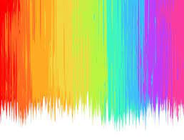

A Origem das Tintas
As tintas têm uma longa história que remonta a milhares de anos. Elas têm sido usadas por diversas culturas ao longo do tempo para uma variedade de propósitos, como arte, decoração, escrita e sinalização. Aqui está uma visão geral da origem das tintas:
Sobre a história:
- Tintas Primitivas:
- As primeiras tintas eram geralmente feitas de materiais naturais, como minerais moídos, argilas coloridas, carvão e óxidos metálicos. Essas substâncias eram misturadas com líquidos como água, sangue animal ou gordura para criar uma pasta que pudesse ser aplicada em superfícies.
- Tintas Egípcias:
- Os antigos egípcios foram pioneiros no desenvolvimento de técnicas de pintura e tintas. Eles usavam uma variedade de pigmentos naturais, incluindo ocre, carvão e minerais triturados, misturados com aglutinantes como goma arábica.
- Tintas à Base de Óleo:
- A técnica de usar óleos como aglutinantes para pigmentos é creditada aos pintores flamengos do século 15. Essa inovação permitiu maior flexibilidade na aplicação e na mistura de cores, e é uma técnica que ainda é amplamente usada hoje.
- Tintas Acrílicas:
- As tintas acrílicas modernas foram desenvolvidas no século 20. Elas são feitas de pigmentos suspensos em polímeros acrílicos, que secam rapidamente e são resistentes à água depois de secas. As tintas acrílicas são populares em muitas formas de arte contemporânea.
- Tintas Industriais:
- Além das tintas usadas para arte e decoração, existem também tintas industriais, que são projetadas para proteger superfícies de corrosão, abrasão e outros tipos de danos. Essas tintas podem ser à base de solvente, à base de água ou à base de pó.
- Tintas Digitais:
- Com o advento da tecnologia digital, surgiram tintas eletrônicas usadas em impressoras e telas de computadores. Essas tintas são frequentemente compostas de pigmentos suspensos em soluções líquidas ou semissólidas.
- Tintas Especiais:
- Existem também tintas especiais, como tintas invisíveis (que só são visíveis sob certas condições), tintas condutoras (usadas em eletrônica) e tintas fluorescentes (que brilham sob luz ultravioleta).